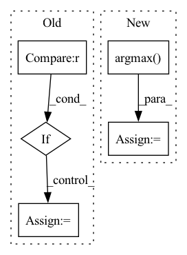

Pattern ID :12190
Before Change
HH, WW = kernel_size
same_size = HH == WW == stride
tiles = (H % HH == 0) and (W % WW == 0)
if same_size and tiles:
x_reshaped, res = max_pool_2d_forward_reshape(x.data, kernel_size, stride)
ctx.method = "reshape"
ctx.x_reshaped = x_reshaped
else:
x_cols, x_cols_argmax, res = max_pool_2d_forward_im2col(x.data, kernel_size, stride)After Change
x_reshaped = x.data.reshape(N * C, 1, H, W)
x_cols = im2col(x_reshaped, HH, WW, 0, stride)
max_idx = np.argmax( x_cols, axis=0)
res = x_cols[max_idx, range(max_idx.size)]
res = res.reshape(OH, OW, N, C).transpose(2, 3, 0, 1)
res = tensor.Tensor(res, requires_grad=x.requires_grad, is_leaf=not x.requires_grad)In pattern: SUPERPATTERN
Frequency: 4
Non-data size: 5
Instances Fragment ID: 41190132
Project Name: pabannier/nanograd
Commit Name: 4342a037a11ec86fc8635e8cf45a44a7ef13561b
Time: 2020-12-29
Author: pierreantoine.bannier@gmail.com
File Name: nanograd/nn/functional.py
M Class Name: MaxPool2d
N Class Name: MaxPool2d
M Method Name: forward(4)
N Method Name: forward(4)
M Parent Class: Function
N Parent Class: Function
M File Name: nanograd/nn/functional.py
N File Name: nanograd/nn/functional.py
M Start Line: 597
M End Line: 614
N Start Line: 560
N End Line: 574
Before Change
batch_size = base
for hcn in HCN_LIST:
new_batch_size = base * hcn
if new_batch_size > max_acceptable_batch_size :
break
batch_size = new_batch_size
candidate_batch_size.append(batch_size)
return list(set(candidate_batch_size))
After Change
candidate_batch_size.append(base)
else:
value = max_acceptable_batch_size // base
index = np.argmax( np.asarray(HCN_LIST) > value)
candidate_batch_size.append(HCN_LIST[index - 1] * base)
candidate_batch_size = list(set(candidate_batch_size))
logger.info(f"Candidate batch size: {candidate_batch_size}")
return candidate_batch_size Fragment ID: 41190100
Project Name: microsoft/deepspeed
Commit Name: e2b39ded9f3e0316ef57632497568acefcb6231b
Time: 2021-11-22
Author: chunyang.wen@gmail.com
File Name: deepspeed/elasticity/elasticity.py
M Class Name: AnonimousClass
N Class Name: AnonimousClass
M Method Name: get_candidate_batch_sizes(2)
N Method Name: get_candidate_batch_sizes(2)
M Parent Class:
N Parent Class:
M File Name: deepspeed/elasticity/elasticity.py
N File Name: deepspeed/elasticity/elasticity.py
M Start Line: 67
M End Line: 75
N Start Line: 64
N End Line: 74
Before Change
loop = tqdm(test_loader)
for batch_idx, frames in enumerate(loop):
if i >= 10 : break
frames = frames.to(DEVICE) // [1, T, 3, h, w]
frames_vis = postprocess_img(frames.squeeze(dim=0)) // [T, 3, h, w]
input = frames[:, :VIDEO_IN_LENGTH] // [1, t, 3, h, w]
pred_rgb = pred_rgb_model.pred_n(input, pred_length=VIDEO_PRED_LENGTH) // [1, T, 3, h, w]
pred_rgb_vis = postprocess_img(pred_rgb) // [T, 3, h, w]
pred_rgb = torch.cat([input, pred_rgb], dim=1)
pred_rgb = torch.stack([seg_model(pred_rgb[:, i]) for i in range(pred_rgb.shape[1])], dim=1)
pred_rgb = pred_rgb.argmax(dim=2).squeeze() // [T, h, w]
pred_then_colorized_vis = colorize_semseg(postprocess_mask(pred_rgb), num_classes=SYNPICK_CLASSES) // [T, 3, h, w]
frames_seg = [seg_model(frames[:, i]).argmax(dim=1) for i in range(frames.shape[1])]
frames_seg = torch.stack(frames_seg, dim=1) // [1, 1, h, w]
input_seg = frames_seg[:, :VIDEO_IN_LENGTH] // [1, t, 1, h, w]
pred_mask = pred_mask_model.pred_n(input_seg, pred_length=VIDEO_PRED_LENGTH)After Change
pred_rgb = pred_rgb.argmax(dim=2).squeeze() // [T, h, w]
pred_then_colorized_vis = colorize_semseg(postprocess_mask(pred_rgb), num_classes=SYNPICK_CLASSES).transpose(0, 3, 1, 2) // [T, 3, h, w]
frames_seg = torch.stack([seg_model(frames[:, i]) for i in range(frames.shape[1])], dim=1).argmax(dim=2) // [1, T, 1, h, w]
frames_seg_in = torch.stack([(frames_seg == i) for i in range(SYNPICK_CLASSES)], dim=2).float() // [1, T, c, h, w] one-hot float
input_seg = frames_seg_in[:, :VIDEO_IN_LENGTH] // [1, t, c, h, w]
pred_mask = pred_mask_model.pred_n(input_seg, pred_length=VIDEO_PRED_LENGTH).argmax(dim=2) // [1, n, 1, h, w]
pred_mask = torch.cat([input_seg.argmax(dim=2), pred_mask], dim=1).squeeze() // [T, h, w] Fragment ID: 41190101
Project Name: ais-bonn/vp-suite
Commit Name: 13016d4ab8ba4f8e7ee087155a6c5171f4d00ba3
Time: 2021-08-02
Author: boltres@ais.uni-bonn.de
File Name: scripts/visualize_4_way.py
M Class Name: AnonimousClass
N Class Name: AnonimousClass
M Method Name: visualize_4_way(1)
N Method Name: visualize_4_way(1)
M Parent Class:
N Parent Class:
M File Name: scripts/visualize_4_way.py
N File Name: scripts/visualize_4_way.py
M Start Line: 16
M End Line: 73
N Start Line: 17
N End Line: 74
Before Change
raise ValueError("y_true should contain only labels present in the provided classes list.")
else:
classes = unique_labels
if len(classes) != y_pred.shape[1] :
raise ValueError(
f"Number of given labels, {len(classes)}, not equal to the number "
f"of columns in \"y_pred\", {y_pred.shape[1]}"
)
if class_subset is None:
class_subset = classes
class_subset = set(class_subset)
return np.array([roc_auc_score(y_true == class_name, y_pred[:, i]) if class_name in class_subset else None
for i, class_name in enumerate(classes)])After Change
// Convert multi label into single label
assert_multi_label_shape(y_true)
classes = range(y_true.shape[1])
y_true = np.argmax( y_true, axis=1)
return np.array([roc_auc_score(y_true == class_name, y_pred[:, i]) for i, class_name in enumerate(classes)])
Fragment ID: 41190134
Project Name: deepchecks/deepchecks
Commit Name: 49ffc017c43a982374c83c98a7027f7c77008188
Time: 2022-10-30
Author: matan@deepchecks.com
File Name: deepchecks/tabular/metric_utils/additional_classification_metrics.py
M Class Name: AnonimousClass
N Class Name: AnonimousClass
M Method Name: roc_auc_per_class(2)
N Method Name: roc_auc_per_class(4)
M Parent Class:
N Parent Class:
M File Name: deepchecks/tabular/metric_utils/additional_classification_metrics.py
N File Name: deepchecks/tabular/metric_utils/additional_classification_metrics.py
M Start Line: 169
M End Line: 203
N Start Line: 238
N End Line: 259